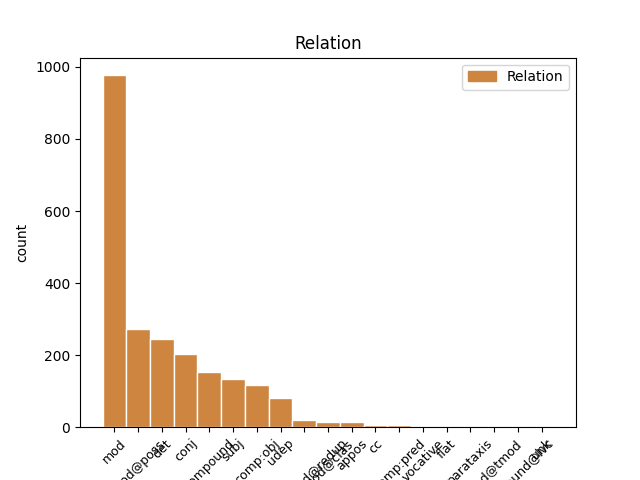
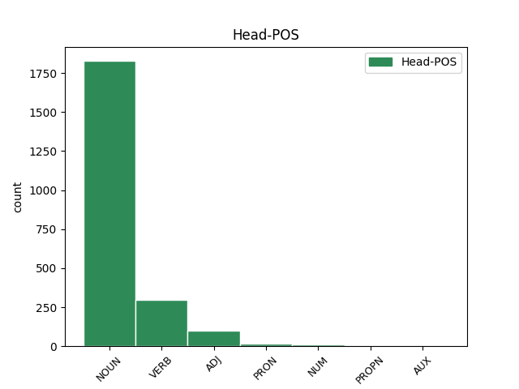
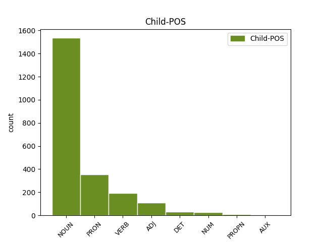

Distribution of features within this leaf



Agreement Rules sorted by frequency.
- When the dependent token is the modifer(mod) of the head token,
1 ‹‹ _ _ _ _ 0 _ _ _
2 ئوتتۇز _ _ _ _ 0 _ _ _
3 ئوغۇل _ _ _ _ 0 _ _ _
4 مەشىرىپى _ _ _ _ 0 _ _ _
5 ›› _ _ _ _ 0 _ _ _
6 ئېلى _ _ _ _ 0 _ _ _
7 رايونىدىكى _ _ _ _ 0 _ _ _
8 ئۇيغۇرلارنىڭ _ _ _ _ 0 _ _ _
9 يەلىك _ _ _ _ 0 _ _ _
10 مەشرىپى _ _ _ _ 0 _ _ _
11 بولۇپ _ _ _ _ 0 _ _ _
12 ، _ _ _ _ 0 _ _ _
13 ئۇ _ _ _ _ 0 _ _ _
14 قاتنىشىش _ _ _ _ 0 _ _ _
15 دائىرسى _ _ _ _ 0 _ _ _
16 پەقەت پەقەت ADJ D Case=Nom 17 mod _ Translit=peqet
17 ئەرلەر ئەر NOUN N Case=Nom|Number=Plur 0 _ _ _
18 بىلەنلا _ _ _ _ 0 _ _ _
19 چەكلىنىدىغان _ _ _ _ 0 _ _ _
20 مەشرەپ _ _ _ _ 0 _ _ _
21 . _ _ _ _ 0 _ _ _
1 مەسلەن _ _ _ _ 0 _ _ _
2 ، _ _ _ _ 0 _ _ _
3 ئوتتۇز _ _ _ _ 0 _ _ _
4 ئوغۇل _ _ _ _ 0 _ _ _
5 مەشرىپى _ _ _ _ 0 _ _ _
6 ، _ _ _ _ 0 _ _ _
7 دولان _ _ _ _ 0 _ _ _
8 مەشرىپى _ _ _ _ 0 _ _ _
9 ، _ _ _ _ 0 _ _ _
10 كۆك _ _ _ _ 0 _ _ _
11 (مايسا) _ _ _ _ 0 _ _ _
12 مەشرىپى مەشرەپ NOUN N Case=Nom|Number[psor]=Plur,Sing|Person[psor]=3 0 _ _ _
13 ، _ _ _ _ 0 _ _ _
14 قېيىت _ _ _ _ 0 _ _ _
15 مەشرىپى مەشرەپ NOUN N Case=Nom|Number[psor]=Plur,Sing|Person[psor]=3 12 conj _ SpaceAfter=No|Translit=meshripi
16 . _ _ _ _ 0 _ _ _
1 ‹‹ _ _ _ _ 0 _ _ _
2 ئوتتۇز _ _ _ _ 0 _ _ _
3 ئوغۇل _ _ _ _ 0 _ _ _
4 مەشىرىپى _ _ _ _ 0 _ _ _
5 ›› _ _ _ _ 0 _ _ _
6 ئېلى _ _ _ _ 0 _ _ _
7 رايونىدىكى _ _ _ _ 0 _ _ _
8 ئۇيغۇرلارنىڭ _ _ _ _ 0 _ _ _
9 يەلىك _ _ _ _ 0 _ _ _
10 مەشرىپى _ _ _ _ 0 _ _ _
11 بولۇپ _ _ _ _ 0 _ _ _
12 ، _ _ _ _ 0 _ _ _
13 ئۇ ئۇ PRON P Case=Nom|Number=Sing|Person=3|PronType=Prs 20 subj _ Translit=u
14 قاتنىشىش _ _ _ _ 0 _ _ _
15 دائىرسى _ _ _ _ 0 _ _ _
16 پەقەت _ _ _ _ 0 _ _ _
17 ئەرلەر _ _ _ _ 0 _ _ _
18 بىلەنلا _ _ _ _ 0 _ _ _
19 چەكلىنىدىغان _ _ _ _ 0 _ _ _
20 مەشرەپ مەشرەپ NOUN N Case=Nom 0 _ _ _
21 . _ _ _ _ 0 _ _ _
1 قوپال _ _ _ _ 0 _ _ _
2 گەپ _ _ _ _ 0 _ _ _
3 قىلغان _ _ _ _ 0 _ _ _
4 بۇ بۇ PRON P Case=Nom|PronType=Dem 5 det _ Translit=bu
5 قىز قىز NOUN N Case=Nom 0 _ _ _
6 ئۈندىمىدى _ _ _ _ 0 _ _ _
7 . _ _ _ _ 0 _ _ _
1 مەسلەن _ _ _ _ 0 _ _ _
2 ، _ _ _ _ 0 _ _ _
3 ئوتتۇز _ _ _ _ 0 _ _ _
4 ئوغۇل _ _ _ _ 0 _ _ _
5 مەشرىپى _ _ _ _ 0 _ _ _
6 ، _ _ _ _ 0 _ _ _
7 دولان _ _ _ _ 0 _ _ _
8 مەشرىپى _ _ _ _ 0 _ _ _
9 ، _ _ _ _ 0 _ _ _
10 كۆك كۆك NOUN A Case=Nom 12 compound _ Translit=kök
11 (مايسا) _ _ _ _ 0 _ _ _
12 مەشرىپى مەشرەپ NOUN N Case=Nom|Number[psor]=Plur,Sing|Person[psor]=3 0 _ _ _
13 ، _ _ _ _ 0 _ _ _
14 قېيىت _ _ _ _ 0 _ _ _
15 مەشرىپى _ _ _ _ 0 _ _ _
16 . _ _ _ _ 0 _ _ _
1 قوپال _ _ _ _ 0 _ _ _
2 گەپ گەپ NOUN N Case=Nom 3 comp:obj _ Translit=gep
3 قىلغان قىل VERB V Case=Nom|Tense=Past|VerbForm=Part 0 _ _ _
4 بۇ _ _ _ _ 0 _ _ _
5 قىز _ _ _ _ 0 _ _ _
6 ئۈندىمىدى _ _ _ _ 0 _ _ _
7 . _ _ _ _ 0 _ _ _
1 ئۆزىنى _ _ _ _ 0 _ _ _
2 چاغلىمايدىغان _ _ _ _ 0 _ _ _
3 بۇ _ _ _ _ 0 _ _ _
4 سولتەك _ _ _ _ 0 _ _ _
5 نېمە _ _ _ _ 0 _ _ _
6 قىلماقچىكەن _ _ _ _ 0 _ _ _
7 ، _ _ _ _ 0 _ _ _
8 ئۇ _ _ _ _ 0 _ _ _
9 قاپ _ _ _ _ 0 _ _ _
10 يۈرەكلىك _ _ _ _ 0 _ _ _
11 قىلىپ _ _ _ _ 0 _ _ _
12 ئارىستوتېلنىڭ _ _ _ _ 0 _ _ _
13 دەستۇرلىرىنى _ _ _ _ 0 _ _ _
14 كىتاب _ _ _ _ 0 _ _ _
15 ئىشكابىدىن _ _ _ _ 0 _ _ _
16 ئېلىۋېتىپ _ _ _ _ 0 _ _ _
17 ، _ _ _ _ 0 _ _ _
18 ئۇلارنىڭ _ _ _ _ 0 _ _ _
19 ئورنىغا _ _ _ _ 0 _ _ _
20 تانا _ _ _ _ 0 _ _ _
21 ، _ _ _ _ 0 _ _ _
22 قەلەي قەلەي NOUN N Case=Nom 23 udep _ Translit=qeley
23 پارچىلىرى پارچا NOUN V Case=Nom|Number=Plur|Number[psor]=Plur,Sing|Person[psor]=3 0 _ _ _
24 ، _ _ _ _ 0 _ _ _
25 پىشاڭ _ _ _ _ 0 _ _ _
26 ، _ _ _ _ 0 _ _ _
27 چەمبەر _ _ _ _ 0 _ _ _
28 ، _ _ _ _ 0 _ _ _
29 كۆپ _ _ _ _ 0 _ _ _
30 بۇلۇڭلۇق _ _ _ _ 0 _ _ _
31 ، _ _ _ _ 0 _ _ _
32 تەكشى _ _ _ _ 0 _ _ _
33 يۈزلۈكتەك _ _ _ _ 0 _ _ _
34 مۇشۇنداق _ _ _ _ 0 _ _ _
35 كۈلكىلىك _ _ _ _ 0 _ _ _
36 بىر _ _ _ _ 0 _ _ _
37 نېمىلەرنى _ _ _ _ 0 _ _ _
38 تىزىپ _ _ _ _ 0 _ _ _
39 قويۇپتۇ _ _ _ _ 0 _ _ _
40 . _ _ _ _ 0 _ _ _
1 ئىلىم ئىلىم NOUN N Case=Nom 3 compound@redup _ Translit=ilim
2 - _ _ _ _ 0 _ _ _
3 پەندىكى پەن NOUN N Case=Nom 0 _ _ _
4 ھەممە _ _ _ _ 0 _ _ _
5 مەسىلىلەر _ _ _ _ 0 _ _ _
6 ئاخىرقى _ _ _ _ 0 _ _ _
7 ھېسابتا _ _ _ _ 0 _ _ _
8 ئارىستوتېل _ _ _ _ 0 _ _ _
9 تەرپىدىن _ _ _ _ 0 _ _ _
10 مەڭگۈلۈك _ _ _ _ 0 _ _ _
11 ھەل _ _ _ _ 0 _ _ _
12 قىلىنىپ _ _ _ _ 0 _ _ _
13 بولغان _ _ _ _ 0 _ _ _
14 . _ _ _ _ 0 _ _ _
1 يۇقىرىدىن _ _ _ _ 0 _ _ _
2 تۆۋەنگە _ _ _ _ 0 _ _ _
3 مەلۇم _ _ _ _ 0 _ _ _
4 يانتۇلۇق _ _ _ _ 0 _ _ _
5 پەرقى _ _ _ _ 0 _ _ _
6 بويىچە _ _ _ _ 0 _ _ _
7 نەچچە _ _ _ _ 0 _ _ _
8 يۈز _ _ _ _ 0 _ _ _
9 قۇدۇق قۇدۇق NOUN N Case=Nom 0 _ _ _
10 ( _ _ _ _ 0 _ _ _
11 كۆز كۆز NOUN N Case=Nom 9 appos _ SpaceAfter=No|Translit=köz
12 ) _ _ _ _ 0 _ _ _
13 چېپىلدۇ _ _ _ _ 0 _ _ _
14 ، _ _ _ _ 0 _ _ _
1 چاشقان _ _ _ _ 0 _ _ _
2 بىلەن _ _ _ _ 0 _ _ _
3 ئۆردەك _ _ _ _ 0 _ _ _
4 ، _ _ _ _ 0 _ _ _
5 قارا _ _ _ _ 0 _ _ _
6 مۈشۈك _ _ _ _ 0 _ _ _
7 ساقچى ساقچى NOUN N Case=Nom 8 mod@clas _ Translit=saqchi
8 باشلىقى باشلىق NOUN N Case=Nom|Number[psor]=Plur,Sing|Person[psor]=3 0 _ _ _
9 ماڭا _ _ _ _ 0 _ _ _
10 كۈلۈمسىرەپ _ _ _ _ 0 _ _ _
11 قارايتتى _ _ _ _ 0 _ _ _
12 ، _ _ _ _ 0 _ _ _
1 تەكشۈرۈش _ _ _ _ 0 _ _ _
2 ئارقىلىق _ _ _ _ 0 _ _ _
3 ، _ _ _ _ 0 _ _ _
4 ئۇلار _ _ _ _ 0 _ _ _
5 بۇ _ _ _ _ 0 _ _ _
6 قىزچاقنىڭ قىزچاق NOUN N Case=Gen 7 mod@poss _ Translit=qizchaqning
7 يارىسىنىڭ يارا NOUN N Case=Gen|Number[psor]=Plur,Sing|Person[psor]=3 0 _ _ _
8 ئەڭ _ _ _ _ 0 _ _ _
9 ئېغىر _ _ _ _ 0 _ _ _
10 ئىكەنلىكىنى _ _ _ _ 0 _ _ _
11 جەزملەشتۈرۈپتۈ _ _ _ _ 0 _ _ _
12 . _ _ _ _ 0 _ _ _
1 _ _ _ _ _ 0 _ _ _
2 ھۆپۈ _ _ _ _ 0 _ _ _
3 - _ _ _ _ 0 _ _ _
4 پۈپ _ _ _ _ 0 _ _ _
5 ! _ _ _ _ 0 _ _ _
6 مايمۇن _ _ _ _ 0 _ _ _
7 ئاكا _ _ _ _ 0 _ _ _
8 ، _ _ _ _ 0 _ _ _
9 مايمۇن مايمۇن NOUN N Case=Nom 0 _ _ _
10 ئاكا ئاكا NOUN N Case=Nom 9 flat _ SpaceAfter=No|Translit=aka
11 ، _ _ _ _ 0 _ _ _
12 تازا _ _ _ _ 0 _ _ _
13 قىزىق _ _ _ _ 0 _ _ _
14 ئىش _ _ _ _ 0 _ _ _
15 قىپسەنغۇ _ _ _ _ 0 _ _ _
16 ! _ _ _ _ 0 _ _ _
1 بۇ _ _ _ _ 0 _ _ _
2 تاش _ _ _ _ 0 _ _ _
3 نەچچە _ _ _ _ 0 _ _ _
4 يۈز _ _ _ _ 0 _ _ _
5 يىللىق _ _ _ _ 0 _ _ _
6 تارىخقا _ _ _ _ 0 _ _ _
7 ئىگە _ _ _ _ 0 _ _ _
8 بۇلۇشى بۇل VERB V Case=Nom|Number[psor]=Plur,Sing|Person[psor]=3|VerbForm=Ger 9 comp:pred _ Translit=bulushi
9 مۇمكىن مۇمكىن NOUN A Case=Nom 0 _ _ _
10 ، _ _ _ _ 0 _ _ _
1 _ _ _ _ _ 0 _ _ _
2 دادا دادا NOUN N Case=Nom 6 vocative _ SpaceAfter=No|Translit=dada
3 ، _ _ _ _ 0 _ _ _
4 بۇ _ _ _ _ 0 _ _ _
5 قايسى _ _ _ _ 0 _ _ _
6 تاغ تاغ NOUN N Case=Nom 0 _ _ _
7 ؟ _ _ _ _ 0 _ _ _
1 بۇ _ _ _ _ 0 _ _ _
2 نېمىدېگەن _ _ _ _ 0 _ _ _
3 گۈزەل _ _ _ _ 0 _ _ _
4 مەنزىرە مەنزىرە NOUN N Case=Nom 8 parataxis _ SpaceAfter=No|Translit=menzire
5 ، _ _ _ _ 0 _ _ _
6 نېمىدېگەن _ _ _ _ 0 _ _ _
7 خۇشال _ _ _ _ 0 _ _ _
8 كەيپىيات كەيپىيات NOUN V Case=Nom 0 _ _ _
9 - _ _ _ _ 0 _ _ _
10 ھە _ _ _ _ 0 _ _ _
11 ! _ _ _ _ 0 _ _ _
1 بۇ _ _ _ _ 0 _ _ _
2 تاغ _ _ _ _ 0 _ _ _
3 ناھايىتى _ _ _ _ 0 _ _ _
4 ئېگىز _ _ _ _ 0 _ _ _
5 بولغاچقا، _ _ _ _ 0 _ _ _
6 تاغ _ _ _ _ 0 _ _ _
7 چوققىلىرى _ _ _ _ 0 _ _ _
8 قىشمۇ قىش NOUN N Case=Nom 9 compound@lvc _ Translit=qishmu
9 ياز ياز NOUN N Case=Nom 0 _ _ _
10 قار-مۇز _ _ _ _ 0 _ _ _
11 بىلەن _ _ _ _ 0 _ _ _
12 قاپلىنىپ _ _ _ _ 0 _ _ _
13 تۇرىدۇ _ _ _ _ 0 _ _ _
14 . _ _ _ _ 0 _ _ _
1 يۇرتداشلار _ _ _ _ 0 _ _ _
2 مەيلى مەيل NOUN N Case=Nom|Number[psor]=Plur,Sing|Person[psor]=3 3 cc _ Translit=meyli
3 كۈندۈزى كۈندۈز ADJ N Case=Nom|Number[psor]=Plur,Sing|Person[psor]=3 0 _ _ _
4 ياكى _ _ _ _ 0 _ _ _
5 كېچىسى _ _ _ _ 0 _ _ _
6 بولسۇن _ _ _ _ 0 _ _ _
7 ، _ _ _ _ 0 _ _ _
8 ئىشى _ _ _ _ 0 _ _ _
9 بولسىلا _ _ _ _ 0 _ _ _
10 ، _ _ _ _ 0 _ _ _
11 ھەر _ _ _ _ 0 _ _ _
12 ۋاقىت _ _ _ _ 0 _ _ _
13 ئۇنىڭ _ _ _ _ 0 _ _ _
14 ئۆيىگە _ _ _ _ 0 _ _ _
15 بارىدۇ _ _ _ _ 0 _ _ _
16 . _ _ _ _ 0 _ _ _
1 1947 _ _ _ _ 0 _ _ _
2 - _ _ _ _ 0 _ _ _
3 يىلى يىل NOUN N Case=Nom|Number[psor]=Plur,Sing|Person[psor]=3 6 mod@tmod _ Translit=yili
4 ئۆكتەبىر _ _ _ _ 0 _ _ _
5 ئېيىنىڭ _ _ _ _ 0 _ _ _
6 ئاخىرلىرى ئاخىر NOUN D Case=Nom|Number=Plur|Number[psor]=Plur,Sing|Person[psor]=3 0 _ _ _
7 ئىدى _ _ _ _ 0 _ _ _
8 . _ _ _ _ 0 _ _ _
1 - _ _ _ _ 0 _ _ _
2 بۇ بۇ PRON P Case=Nom|PronType=Dem 5 unk _ Translit=bu
3 يۇرتىمىزدىكى _ _ _ _ 0 _ _ _
4 ئانا _ _ _ _ 0 _ _ _
5 دەريا دەريا NOUN N Case=Nom 0 _ _ _
6 _ _ _ _ _ 0 _ _ _
7 تارىم _ _ _ _ 0 _ _ _
8 دەرياسى _ _ _ _ 0 _ _ _
9 . _ _ _ _ 0 _ _ _
Disagree Examples:
1 مايمۇن _ _ _ _ 0 _ _ _
2 بۇ بۇ PRON P Case=Nom|PronType=Dem 3 det _ Translit=bu
3 گەپنى گەپ NOUN N Case=Acc 0 _ _ _
4 ئاڭلاپلا _ _ _ _ 0 _ _ _
5 دەپتۇ _ _ _ _ 0 _ _ _
6 : _ _ _ _ 0 _ _ _
1 - _ _ _ _ 0 _ _ _
2 تاغا _ _ _ _ 0 _ _ _
3 ، _ _ _ _ 0 _ _ _
4 نېمە _ _ _ _ 0 _ _ _
5 قىلىۋاتىسىز _ _ _ _ 0 _ _ _
6 ؟ _ _ _ _ 0 _ _ _
7 - _ _ _ _ 0 _ _ _
8 دەپ _ _ _ _ 0 _ _ _
9 سورىدى _ _ _ _ 0 _ _ _
10 قەيسەر _ _ _ _ 0 _ _ _
11 قىزىقسىنغان قىزىقسىن VERB V Case=Nom|Tense=Past|VerbForm=Ger 12 comp:obj _ Translit=qiziqsinghan
12 ھالدا ھال NOUN N Case=Loc 0 _ _ _
13 . _ _ _ _ 0 _ _ _
1 - _ _ _ _ 0 _ _ _
2 شا _ _ _ _ 0 _ _ _
3 كىچىك _ _ _ _ 0 _ _ _
4 ، _ _ _ _ 0 _ _ _
5 مۇشۇ مۇشۇ PRON P Case=Nom|PronType=Dem 6 det _ Translit=mushu
6 تاشنىڭ تاش NOUN N Case=Gen 0 _ _ _
7 ئۆزى _ _ _ _ 0 _ _ _
8 بىر _ _ _ _ 0 _ _ _
9 كىتاب _ _ _ _ 0 _ _ _
10 ! _ _ _ _ 0 _ _ _
1 - _ _ _ _ 0 _ _ _
2 شا _ _ _ _ 0 _ _ _
3 كىچىك _ _ _ _ 0 _ _ _
4 ، _ _ _ _ 0 _ _ _
5 مۇشۇ _ _ _ _ 0 _ _ _
6 تاشنىڭ تاش NOUN N Case=Gen 7 mod@poss _ Translit=tashning
7 ئۆزى ئۆز PRON P Case=Nom|Number[psor]=Plur,Sing|Person[psor]=3|Reflex=Yes 0 _ _ _
8 بىر _ _ _ _ 0 _ _ _
9 كىتاب _ _ _ _ 0 _ _ _
10 ! _ _ _ _ 0 _ _ _
1 ئۇنىڭ ئۇ PRON P Case=Gen|Number=Sing|Person=3|PronType=Prs 4 mod@poss _ Translit=uning
2 قەۋەت _ _ _ _ 0 _ _ _
3 - _ _ _ _ 0 _ _ _
4 قەۋەتلىرى قەۋەت NOUN N Case=Nom|Number=Plur|Number[psor]=Plur,Sing|Person[psor]=3 0 _ _ _
5 كىتاب _ _ _ _ 0 _ _ _
6 ۋاراقلىرى _ _ _ _ 0 _ _ _
7 ، _ _ _ _ 0 _ _ _
8 ئۆزى _ _ _ _ 0 _ _ _
9 قېلىن _ _ _ _ 0 _ _ _
10 كىتابقا _ _ _ _ 0 _ _ _
11 ئوخشاپ _ _ _ _ 0 _ _ _
12 تۇرمامدۇ _ _ _ _ 0 _ _ _
13 . _ _ _ _ 0 _ _ _